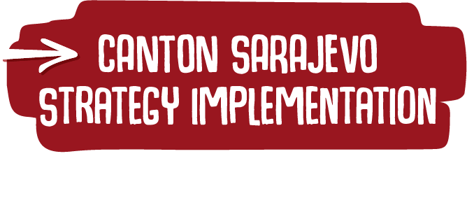
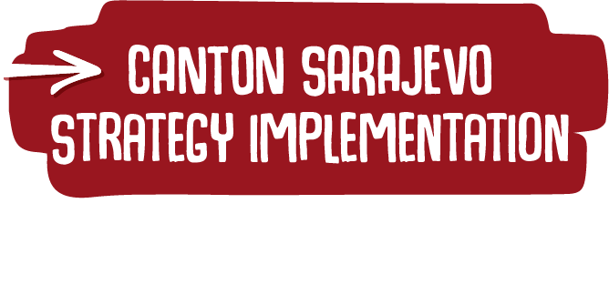

The Ministry of Education, Science and Youth of Canton Sarajevo and the Ministry of Education, Science, Culture and Sport of Tuzla Canton, together with more than 400 local experts and with technical and financial support from Save the Children, have developed
for inclusive education of children with developmental disabilities with a seven-year implementation plan in the Tuzla Canton and Canton Sarajevo


The strategies, on the one hand, structure existing good practices, but they also introduce innovative models of support through establishment of centres for development of inclusive practices, strong networking of all structures in the cantons working towards inclusion in preschool upbringing and education, and development of mobile expert team networks as one of the important functions of centres for development of inclusive practices.


„Implementation of this education strategy will certainly organise and adjust education in Canton Sarajevo to meet the needs of children with developmental disabilities and therefore also European education standards in this, most sensitive segment.“ – Elvir Kazazović, minister of education, science and youth of Canton Sarajevo.
„Approximately 10% of BiH population has some form of disability in terms of their physical, sensory, developmental, mental or intellectual functioning. Prejudice, stigma, lack of information and lack of availability prevent some parents from including their children in the preschool and education system. This justifies the need for adoption of this strategy and a systematic approach to development of inclusive practices to improve the system for early detection and support to children with developmental disabilities.” – Zlatan Muratović, minister of education, science, culture and sport of Tuzla Canton.
„I am proud of the opportunity to support the ministries of education in the Tuzla Canton and Canton Sarajevo in developing these multi-year strategies. I thank them for demonstrating political will to launch this important process and for the participatory approach applied in the development of this new policy.“ – Andrea Žeravčić, director North-West Balkans, Save the Children.

Development of a comprehensive support system for children/students with developmental disabilities in preschool upbringing and education. Find out more

Improving the quality of work of teachers and improving expert capacities in preschool and educational institutions. Find out more

Development of support services for the families of children/students with developmental disabilities. Find out more

Strengthening the role of non-governmental organisations in the inclusion development process. Find out more

Reallocation of existing budgets and use of project financing to build and develop an inclusive education system for children/students with developmental disabilities. Find out more

 
